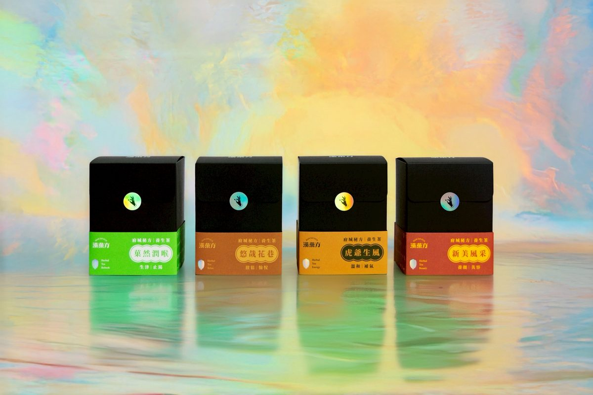
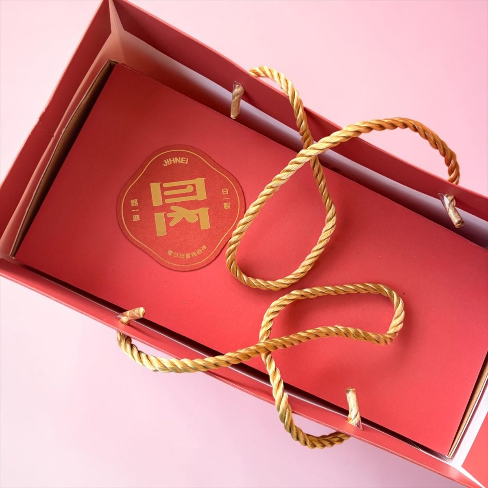
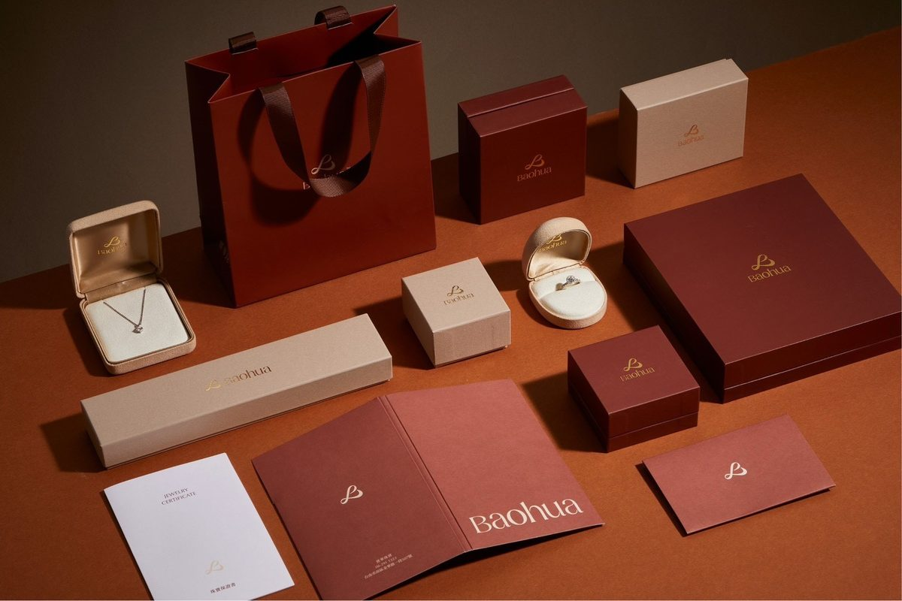

軋型是什麼？
軋型（模切、Die-cutting，行話也叫割型）是依設計製作「刀模」，用機器加壓，把紙切出想要的形狀。直線裁切只能切出方正的四邊；要圓角、要曲線、要鏤空、要展開的盒型，就得靠軋型。
同一塊刀模上除了「切斷」的刀，還能同時裝壓線刀——只壓出折線不切穿，紙盒與紙袋的折疊線就是這樣來的。一次過機，切形與折線同時完成。



刀模與計價：一次性費用＋按張計工
軋型的費用結構和燙金很像，也是兩塊：
① 刀模費（一次性）
依你的圖形製作刀模的費用。尺寸越大、形狀越複雜，刀模費越高。小尺寸（如名片、吊卡）與大尺寸（如展開的盒型、紙袋）用的刀模等級不同，費用也分級。這是一次性費用，跟數量無關。
② 軋型工資（隨數量）
上機軋切的加工費，按張數計、量大有階梯優惠，少量件則有基本工繳。和燙金一樣，數量拉大，平均每張的成本會明顯下降。
省錢小知識：如果只是名片、卡片要「四個角修圓」，不用開刀模——喜成用圓角機處理，費用比開模軋型低得多，圓角半徑還能挑。設計只差一個圓角時，先問我們，別急著開模。
貼紙半斬（花刀）是什麼？
貼紙類的軋型有個特殊做法叫半斬（花刀、Kiss-cut）：刀只切穿上層的貼紙面材，不切穿底紙——所以整版貼紙拿在手上是完整一張，要用時沿著切線一撕就起。市面上一整版的貼紙、標籤，幾乎都是半斬做的。
半斬吃的是刀壓的精準控制：壓太深切穿底紙、太淺撕不起來。這正是自動化機台與老師傅手感的價值所在。
什麼紙可以軋型？
- 50 磅以上的紙就能軋——薄如標籤紙、厚到 500 磅的裱合厚卡，喜成都處理。
- 銅版紙、美術紙、牛皮紙、灰紙板、合成紙、貼紙材……皆可。
- 已印刷、已燙金的半成品也能來料軋型（順序上通常先印刷燙金、最後才軋型成形）。
喜成的軋型設備與能力
| 項目 | 規格 |
|---|---|
| 割型機 | 海德堡菊全開自動輪轉割型機 |
| 最大紙張尺寸 | 64 × 90 cm |
| 最大割型面積 | 64 × 80 cm |
| 紙張厚度範圍 | 50 磅 ～ 500 磅 |
| 直線裁切 | 大型裁紙機，最大 100 × 180 cm |
| 超大尺寸 | 超過菊全開的特大件，可協助安排處理 |
給設計師：刀模線檔案的三個重點
- 刀模線獨立一個圖層，用特別色標示切線與壓線（習慣上切線實線、壓線虛線），不要和印刷圖文混在一起。
- 圖文離刀模線保留安全距離，避免裁切公差吃到重要內容；出血則要做滿超出刀線。
- 尖角與細長的鏤空要留意——過於尖細的形狀刀模難彎、紙也容易破，拿不準就把檔案傳來，我們上機前替你檢查。
常見問題
軋型和雷射切割有什麼不同？
雷射適合極少量、超複雜的鏤空，但速度慢、切邊會有焦痕；刀模軋型開模後量產快、切邊乾淨、單張成本低。有一定數量的案子，刀模軋型幾乎都是更划算的選擇。
刀模可以保留下次再用嗎？
可以。同一個形狀再版時，刀模若保存狀況良好即可沿用，不必重新開模。喜成會替常往來的客戶保管刀模。
只做軋型、不印刷，可以嗎？
可以。印好的成品寄過來，我們做來料軋型加工——這正是喜成替許多同業與設計師做的事，詳見同業代工專區。